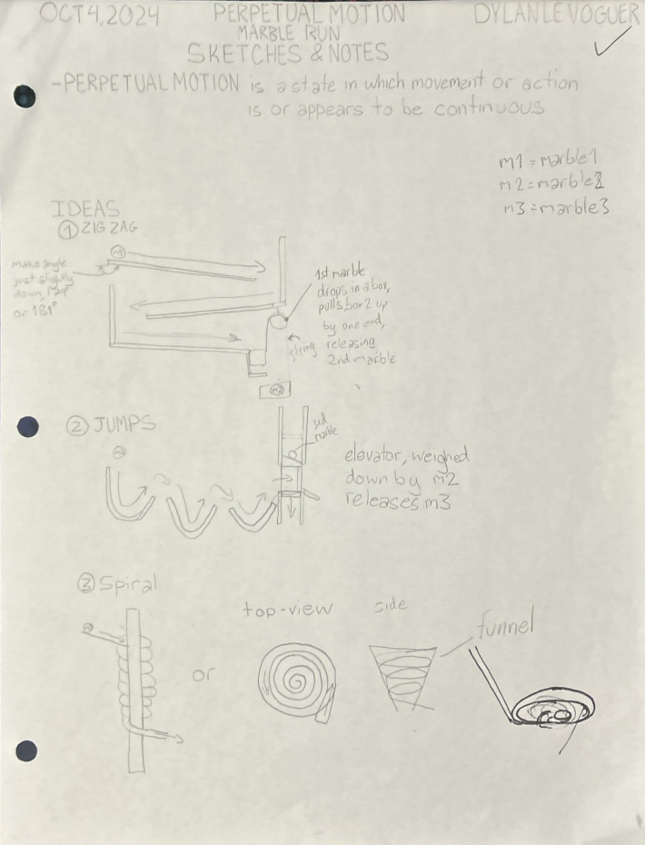
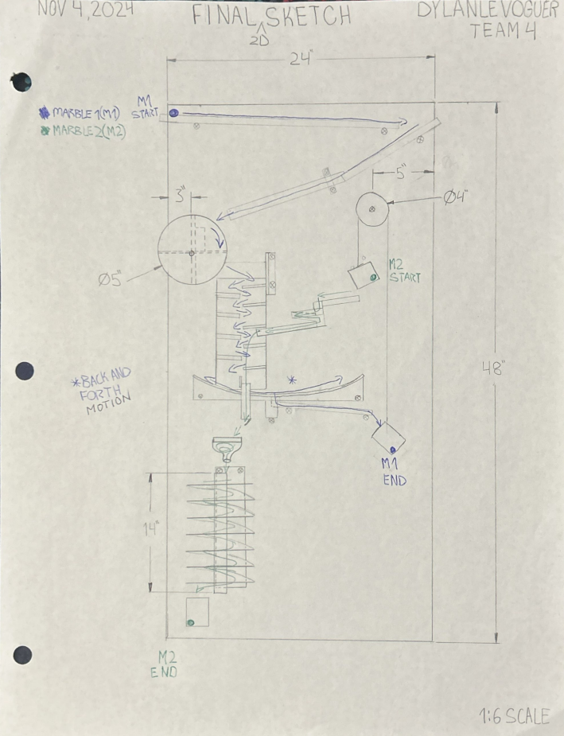
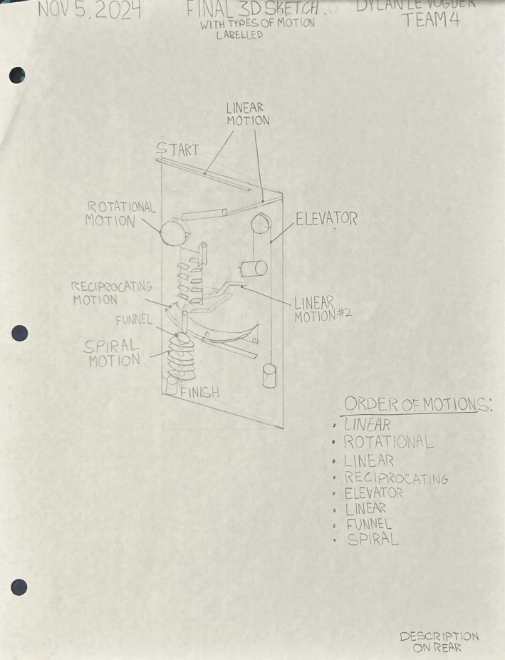
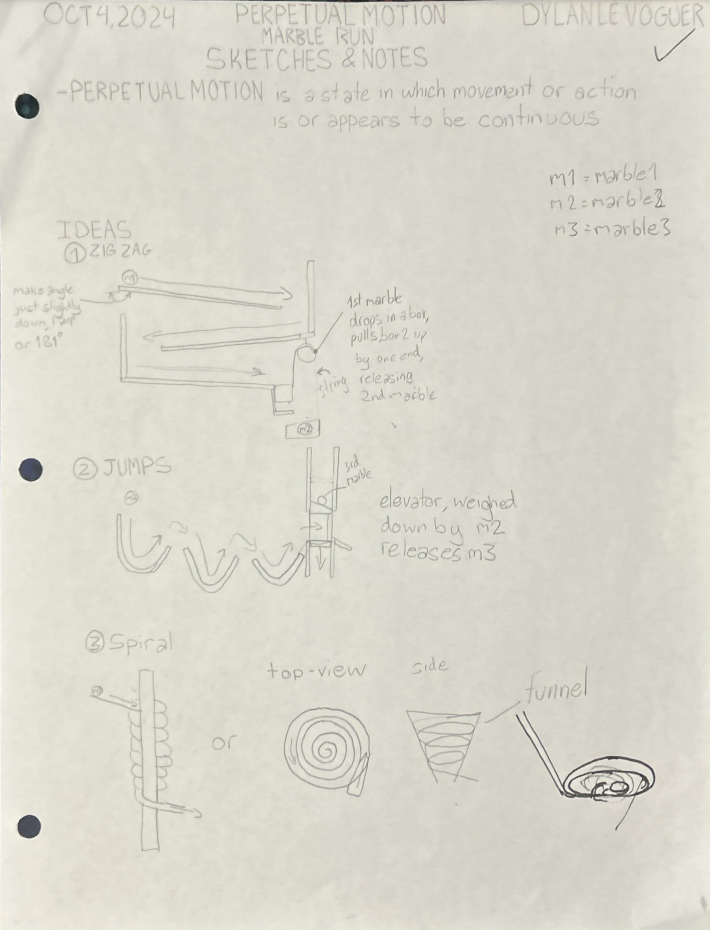
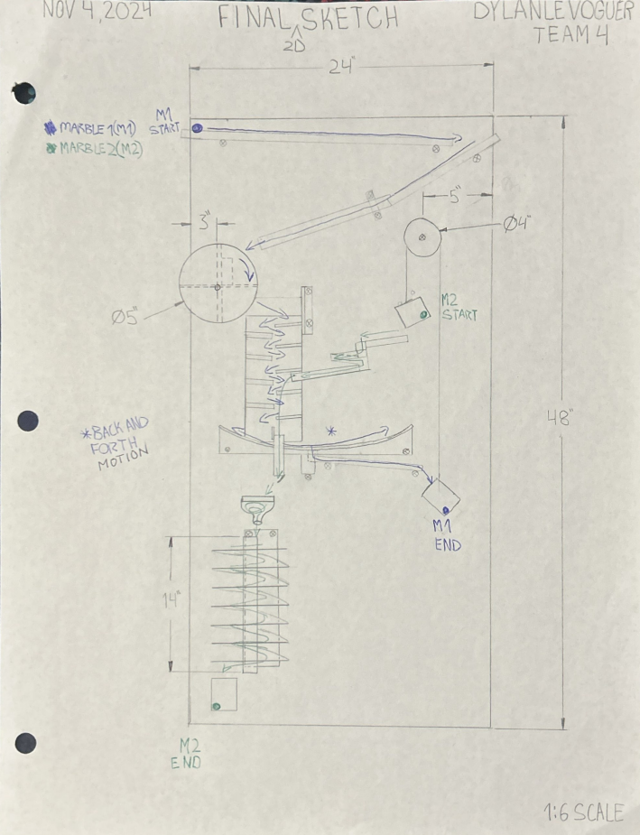
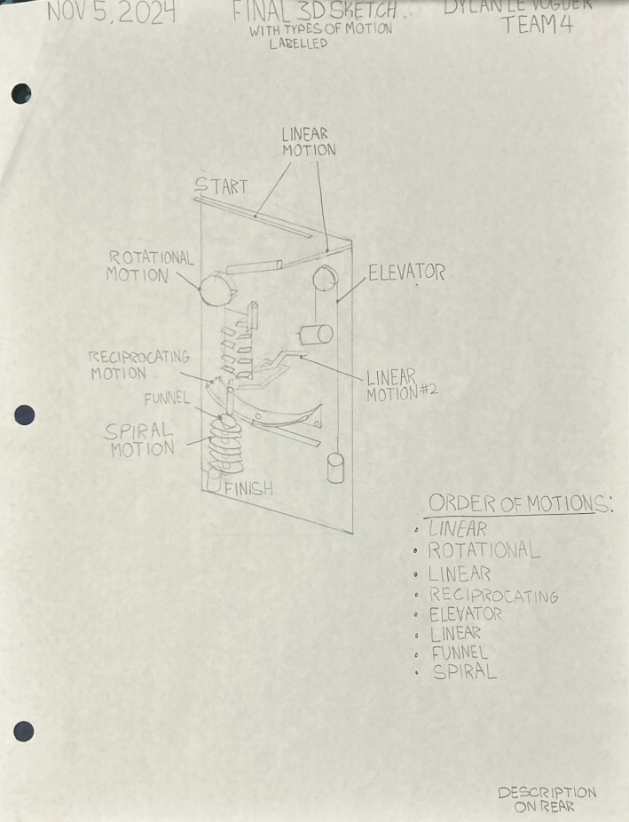

Marble Run
-
Goal:
The goal of this project was to create a course for a marble that took as much time aspossible to complete.
-
Process:
The process involved designing unique segments for the marble to run through, creating track to tie them all together, and constructing the track. All while having it be able to be removed from the board flawlessly. We also refined the course to ensure consistent operation.
-
Paperwork:
Documentation included initial sketches, design drawings, a 3D drawing and a material list.
 




